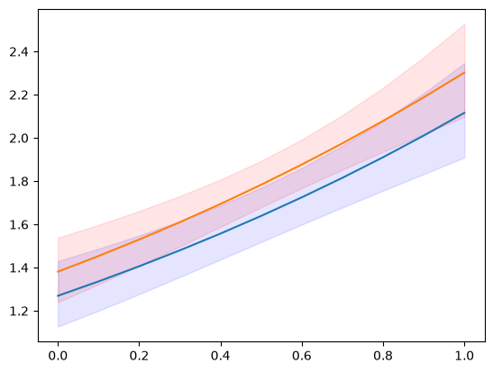
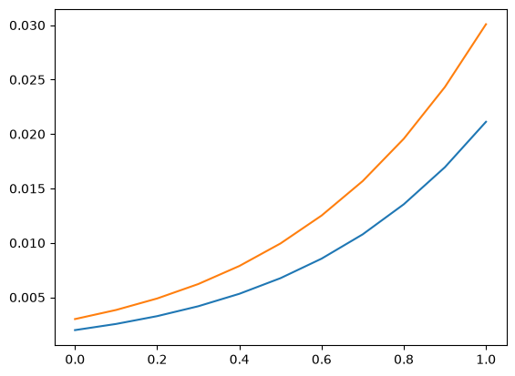
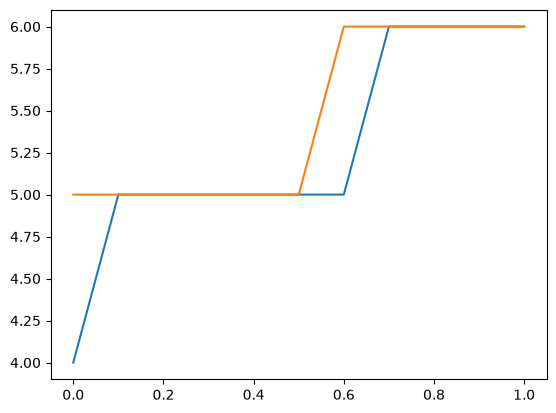
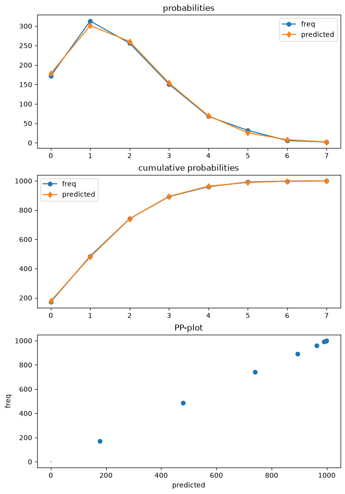
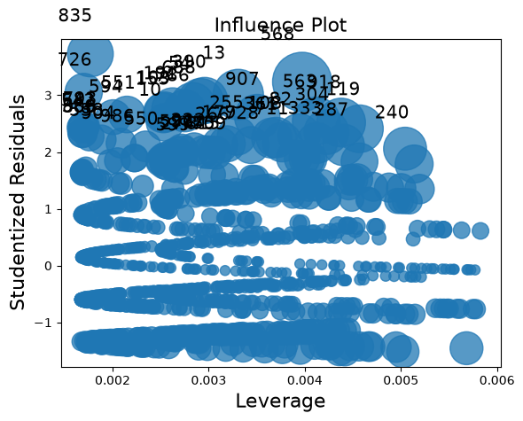
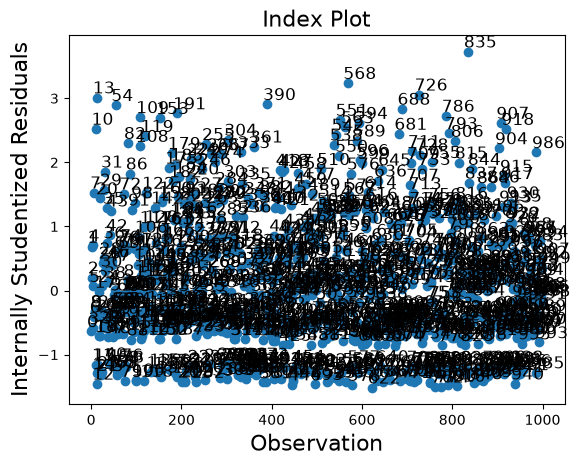

Post-estimation Overview - Poisson#
This notebook provides an overview of post-estimation results that are available in several models, illustrated for the Poisson Model.
see also statsmodels/statsmodels#7707
Traditionally the results classes for the models provided Wald inference and prediction. Several models now have additional methods for postestimation results, for inference, prediction and specification or diagnostic tests.
The following is based on the current pattern for maximum likelihood models outside tsa, mainly for the discrete models. Other models still follow to some extend a different API pattern. Linear models like OLS and WLS have their special implementation, for example OLS influence. GLM also still has some features that are model specific.
The main post-estimation features are
Inference - Wald tests section
Inference - score tests section
get_predictionprediction with inferential statistics sectionget_distributiondistribution class based on estimated parameters sectionget_diagnosticdiagnostic and specification tests, measures and plots sectionget_influenceoutlier and influence diagnostics section
A simulated example#
For the illustration we simulate data for the Poisson regression, that is correctly specified and has a relatively large sample. One regressor is categorical with two levels, The second regressor is uniformly distributed on the unit interval.
[1]:
import numpy as np
import pandas as pd
from scipy import stats
import matplotlib.pyplot as plt
from statsmodels.discrete.discrete_model import Poisson
from statsmodels.discrete.diagnostic import PoissonDiagnostic
[2]:
np.random.seed(983154356)
nr = 10
n_groups = 2
labels = np.arange(n_groups)
x = np.repeat(labels, np.array([40, 60]) * nr)
nobs = x.shape[0]
exog = (x[:, None] == labels).astype(np.float64)
xc = np.random.rand(len(x))
exog = np.column_stack((exog, xc))
# reparameterize to explicit constant
# exog[:, 1] = 1
beta = np.array([0.2, 0.3, 0.5], np.float64)
linpred = exog @ beta
mean = np.exp(linpred)
y = np.random.poisson(mean)
len(y), y.mean(), (y == 0).mean()
res = Poisson(y, exog).fit(disp=0)
print(res.summary())
Poisson Regression Results
==============================================================================
Dep. Variable: y No. Observations: 1000
Model: Poisson Df Residuals: 997
Method: MLE Df Model: 2
Date: Wed, 01 Jul 2026 Pseudo R-squ.: 0.01258
Time: 12:19:16 Log-Likelihood: -1618.3
converged: True LL-Null: -1638.9
Covariance Type: nonrobust LLR p-value: 1.120e-09
==============================================================================
coef std err z P>|z| [0.025 0.975]
------------------------------------------------------------------------------
x1 0.2386 0.061 3.926 0.000 0.120 0.358
x2 0.3229 0.055 5.873 0.000 0.215 0.431
x3 0.5109 0.083 6.186 0.000 0.349 0.673
==============================================================================
[ ]:
Inference - Wald#
cov_type option for fit).The currently available methods, aside from the statistics in the parmeter table, are
t_test
wald_test
t_test_pairwise
wald_test_terms
f_test is available as legacy method. It is the same as wald_test with keyword option use_f=True.
[3]:
res.t_test("x1=x2")
[3]:
<class 'statsmodels.stats.contrast.ContrastResults'>
Test for Constraints
==============================================================================
coef std err z P>|z| [0.025 0.975]
------------------------------------------------------------------------------
c0 -0.0843 0.049 -1.717 0.086 -0.181 0.012
==============================================================================
[4]:
res.wald_test("x1=x2, x3", scalar=True)
[4]:
<class 'statsmodels.stats.contrast.ContrastResults'>
<Wald test (chi2): statistic=40.772322944293464, p-value=1.4008852592190214e-09, df_denom=2>
Inference - score_test#
new in statsmodels 0.14 for most discrete models and for GLM.
Score or lagrange multiplier (LM) tests are based on the model estimated under the null hypothesis. A common example are variable addition tests for which we estimate the model parameters under null restrictions but evaluate the score and hessian under for the full model to test whether an additional variable is statistically significant.
cov_type for Wald tests will not be appropriate for score tests. In many cases Wald tests overjects but score tests can underreject. Using the Wald small sample corrections for score tests might leads then to more conservative p-values.We can use the variable addition score_test for specification testing. In the following example we test whether there is some misspecified nonlinearity in the model by adding quadratic or polynomial tersm.
In our example we can expect that these specification tests do not reject the null hypotheses because the model is correctly specified and the sample size is large,
[5]:
res.score_test(exog_extra=xc**2)
[5]:
(array([0.05300569]), array([0.81791332]), 1)
A reset test is a test for correct specification of the link function. The standard form of the test adds polynomial terms of the linear predictor as extra regressors and test for their significance.
Here we use the variable addition score test for the reset test with powers 2 and 3.
[6]:
linpred = res.predict(which="linear")
res.score_test(exog_extra=linpred[:, None] ** [2, 3])
[6]:
(array([1.3867703]), array([0.49988103]), 2)
Prediction#
The model and results classes have predict method which only returns the predicted values. The get_prediction method adds inferential statistics for the prediction, standard errors, pvalues and confidence intervals.
For the following example, we create new sets of explanatory variables that is split by the categorical level and over a uniform grid of the continuous variable.
[7]:
n = 11
exc = np.linspace(0, 1, n)
ex1 = np.column_stack((np.ones(n), np.zeros(n), exc))
ex2 = np.column_stack((np.zeros(n), np.ones(n), exc))
m1 = res.get_prediction(ex1)
m2 = res.get_prediction(ex2)
The available methods and attributes of the prediction results class are
[8]:
[i for i in dir(m1) if not i.startswith("_")]
[8]:
['conf_int',
'deriv',
'df',
'dist',
'dist_args',
'func',
'linpred',
'linpred_se',
'predicted',
'row_labels',
'se',
'summary_frame',
't_test',
'tvalues',
'var_pred']
[9]:
plt.plot(exc, np.column_stack([m1.predicted, m2.predicted]))
ci = m1.conf_int()
plt.fill_between(exc, ci[:, 0], ci[:, 1], color="b", alpha=0.1)
ci = m2.conf_int()
plt.fill_between(exc, ci[:, 0], ci[:, 1], color="r", alpha=0.1)
# to add observed points:
# y1 = y[x == 0]
# plt.plot(xc[x == 0], y1, ".", color="b", alpha=.3)
# y2 = y[x == 1]
# plt.plot(xc[x == 1], y2, ".", color="r", alpha=.3)
[9]:
<matplotlib.collections.FillBetweenPolyCollection at 0x7f3c74d8a350>

[10]:
y.max()
[10]:
np.int64(7)
One of the available statistics that we can predict, specified by the “which” keyword, is the expected frequencies or probabilities of the predictive distribution. This shows us what the predicted probability of obsering count = 1, 2, 3, … is for a given set of explanatory variables.
[11]:
y_max = 5
f1 = res.get_prediction(ex1, which="prob", y_values=np.arange(y_max + 1))
f2 = res.get_prediction(ex2, which="prob", y_values=np.arange(y_max + 1))
f1.predicted.mean(0), f2.predicted.mean(0)
[11]:
(array([0.19681697, 0.31325239, 0.25570764, 0.14275759, 0.06128168,
0.02154715]),
array([0.17115113, 0.29529781, 0.26128059, 0.15810937, 0.07357482,
0.02804883]))
We can also get the confidence intervals for the predicted probabilities. However, if we want the confidence interval for the average predicted probabilities, then we need to aggregate inside the predict function. The relevant keyword is “average” which computes the average of the predictions over the observations given by the exog array.
[12]:
f1 = res.get_prediction(ex1, which="prob", y_values=np.arange(y_max + 1), average=True)
f2 = res.get_prediction(ex2, which="prob", y_values=np.arange(y_max + 1), average=True)
f1.predicted, f2.predicted
[12]:
(array([0.19681697, 0.31325239, 0.25570764, 0.14275759, 0.06128168,
0.02154715]),
array([0.17115113, 0.29529781, 0.26128059, 0.15810937, 0.07357482,
0.02804883]))
[13]:
f1.conf_int()
[13]:
array([[0.17256941, 0.22106453],
[0.2982307 , 0.32827408],
[0.24818616, 0.26322912],
[0.12876732, 0.15674787],
[0.05088296, 0.07168041],
[0.01626921, 0.0268251 ]])
[14]:
f2.conf_int()
[14]:
array([[0.15303084, 0.18927142],
[0.28178041, 0.30881522],
[0.25622062, 0.26634055],
[0.14720224, 0.1690165 ],
[0.06442055, 0.0827291 ],
[0.02287077, 0.03322688]])
help(res.get_prediction)help(res.model.predict)Distribution#
For given parameters we can create an instance of a scipy or scipy-compatible distribution class. This provides us with access to any of the methods in the distribution, pmf/pdf, cdf, stats.
The get_distribution method of the results class uses the provided array of explanatory variables and the estimated parameters to specify a vectorized distribution. The get_prediction method of the model can be used for user specified parameters params.
[15]:
distr = res.get_distribution()
distr
[15]:
<scipy.stats._distn_infrastructure.rv_discrete_frozen at 0x7f3c74d93620>
[16]:
distr.pmf(0)[:10]
[16]:
array([0.15420516, 0.13109359, 0.17645042, 0.16735421, 0.13445031,
0.14851843, 0.22287053, 0.14979318, 0.25252986, 0.25013583])
The mean of the conditional distribution is the same as the predicted mean from the model.
[17]:
distr.mean()[:10]
[17]:
array([1.86947133, 2.03184379, 1.73471534, 1.78764267, 2.00656061,
1.90704623, 1.50116427, 1.89849971, 1.37622577, 1.3857512 ])
[18]:
res.predict()[:10]
[18]:
array([1.86947133, 2.03184379, 1.73471534, 1.78764267, 2.00656061,
1.90704623, 1.50116427, 1.89849971, 1.37622577, 1.3857512 ])
We can also obtain the distribution for a new set of explanatory variables. Explanatory variables can be provided in the same way as for the predict method.
We use again the grid of explanatory variables from the prediction section. As example for its usage we can compute the probability that a count (strictly) larger than 5 will be observed conditional on the values of the explanatory variables.
[19]:
distr1 = res.get_distribution(ex1)
distr2 = res.get_distribution(ex2)
[20]:
distr1.sf(5), distr2.sf(5)
[20]:
(array([0.00198421, 0.00255027, 0.00326858, 0.00417683, 0.00532093,
0.00675641, 0.00854998, 0.01078116, 0.0135439 , 0.01694825,
0.02112179]),
array([0.00299758, 0.00383456, 0.00489029, 0.00621677, 0.00787663,
0.00994468, 0.01250966, 0.01567579, 0.01956437, 0.02431503,
0.03008666]))
[21]:
plt.plot(exc, np.column_stack([distr1.sf(5), distr2.sf(5)]))
[21]:
[<matplotlib.lines.Line2D at 0x7f3c74b36f90>,
<matplotlib.lines.Line2D at 0x7f3c74b370e0>]

We can also use the distribution to find an upper confidence limit on a new observation. The following plot and table show the upper limit counts for given explanatory variables. The probability of observing this count or less is at least 0.99.
Note, this takes parameters as fixed and does not take parameter uncertainty into account.
[22]:
plt.plot(exc, np.column_stack([distr1.ppf(0.99), distr2.ppf(0.99)]))
[22]:
[<matplotlib.lines.Line2D at 0x7f3c74bd7a10>,
<matplotlib.lines.Line2D at 0x7f3c74bd7b60>]

[23]:
[distr1.ppf(0.99), distr2.ppf(0.99)]
[23]:
[array([4., 5., 5., 5., 5., 5., 5., 6., 6., 6., 6.]),
array([5., 5., 5., 5., 5., 5., 6., 6., 6., 6., 6.])]
Diagnostic#
Poisson is the first model that has a diagnostic class that can be obtained from the results using get_diagnostic. Other count models have a generic count diagnostic class that has currently only a limited number of methods.
The Poisson model in our example is correctly specified. Additionally we have a large sample size. So, in this case none of the diagnostic tests reject the null hypothesis of correct specification.
[24]:
dia = res.get_diagnostic()
[i for i in dir(dia) if not i.startswith("_")]
[24]:
['plot_probs',
'probs_predicted',
'results',
'test_chisquare_prob',
'test_dispersion',
'test_poisson_zeroinflation',
'y_max']
[25]:
dia.plot_probs();

test for excess dispersion
There are several dispersion tests available for Poisson. Currently all of them are returned. The DispersionResults class has a summary_frame method. The returned dataframe provides an overview of the results that is easier to read.
[26]:
td = dia.test_dispersion()
td
[26]:
<class 'statsmodels.discrete._diagnostics_count.DispersionResults'>
statistic = array([-0.42597379, -0.42597379, -0.39884024, -0.48327447, -0.48327447,
-0.47790855, -0.45225818])
pvalue = array([0.67012695, 0.67012695, 0.69001092, 0.62890087, 0.62890087,
0.6327153 , 0.651083 ])
method = ['Dean A', 'Dean B', 'Dean C', 'CT nb2', 'CT nb1', 'CT nb2 HC3', 'CT nb1 HC3']
alternative = ['mu (1 + a mu)', 'mu (1 + a mu)', 'mu (1 + a)', 'mu (1 + a mu)', 'mu (1 + a)', 'mu (1 + a mu)', 'mu (1 + a)']
name = 'Poisson Dispersion Test'
tuple = (array([-0.42597379, -0.42597379, -0.39884024, -0.48327447, -0.48327447,
-0.47790855, -0.45225818]), array([0.67012695, 0.67012695, 0.69001092, 0.62890087, 0.62890087,
0.6327153 , 0.651083 ]))
[27]:
df = td.summary_frame()
df
[27]:
| statistic | pvalue | method | alternative | |
|---|---|---|---|---|
| 0 | -0.425974 | 0.670127 | Dean A | mu (1 + a mu) |
| 1 | -0.425974 | 0.670127 | Dean B | mu (1 + a mu) |
| 2 | -0.398840 | 0.690011 | Dean C | mu (1 + a) |
| 3 | -0.483274 | 0.628901 | CT nb2 | mu (1 + a mu) |
| 4 | -0.483274 | 0.628901 | CT nb1 | mu (1 + a) |
| 5 | -0.477909 | 0.632715 | CT nb2 HC3 | mu (1 + a mu) |
| 6 | -0.452258 | 0.651083 | CT nb1 HC3 | mu (1 + a) |
test for zero-inflation
[28]:
dia.test_poisson_zeroinflation()
[28]:
<class 'statsmodels.stats.base.HolderTuple'>
statistic = np.float64(-0.6657556201098714)
pvalue = np.float64(0.5055673158225651)
pvalue_smaller = np.float64(0.7472163420887175)
pvalue_larger = np.float64(0.25278365791128254)
chi2 = np.float64(0.44323054570787945)
pvalue_chi2 = np.float64(0.505567315822565)
df_chi2 = 1
distribution = 'normal'
tuple = (np.float64(-0.6657556201098714), np.float64(0.5055673158225651))
chisquare test for zero-inflation
[29]:
dia.test_chisquare_prob(bin_edges=np.arange(3))
[29]:
<class 'statsmodels.stats.base.HolderTuple'>
statistic = np.float64(0.456170941873113)
pvalue = np.float64(0.4994189468121014)
df = np.int64(1)
diff1 = array([[-0.15420516, 0.71171787],
[-0.13109359, -0.26636169],
[-0.17645042, -0.30609125],
...,
[-0.10477112, -0.23636125],
[-0.10675436, -0.2388335 ],
[-0.21168332, -0.32867305]], shape=(1000, 2))
res_aux = <statsmodels.regression.linear_model.RegressionResultsWrapper object at 0x7f3c74baaea0>
distribution = 'chi2'
tuple = (np.float64(0.456170941873113), np.float64(0.4994189468121014))
goodness of fit test for predicted frequencies
This is a chisquare test that takes into account that parameters are estimated. Counts larger than the largest bin edge will be added to the last bin, so that the sum over bins is one.
For example using 5 bins
[30]:
dt = dia.test_chisquare_prob(bin_edges=np.arange(6))
dt
[30]:
<class 'statsmodels.stats.base.HolderTuple'>
statistic = np.float64(0.9414641297779136)
pvalue = np.float64(0.9185382008345917)
df = np.int64(4)
diff1 = array([[-0.15420516, 0.71171787, -0.26946759, -0.16792064, -0.07848071],
[-0.13109359, -0.26636169, -0.27060268, 0.81672588, -0.0930961 ],
[-0.17645042, -0.30609125, 0.7345094 , -0.15351687, -0.06657702],
...,
[-0.10477112, -0.23636125, -0.26661279, 0.79950922, -0.11307565],
[-0.10675436, -0.2388335 , 0.73283789, -0.1992339 , -0.11143275],
[-0.21168332, -0.32867305, 0.74484061, -0.13205892, -0.05126078]],
shape=(1000, 5))
res_aux = <statsmodels.regression.linear_model.RegressionResultsWrapper object at 0x7f3c74830050>
distribution = 'chi2'
tuple = (np.float64(0.9414641297779136), np.float64(0.9185382008345917))
[31]:
dt.diff1.mean(0)
[31]:
array([-0.00628136, 0.01177308, -0.00449604, -0.00270524, -0.00156519])
[32]:
vars(dia)
[32]:
{'results': <statsmodels.discrete.discrete_model.PoissonResults at 0x7f3c79686660>,
'y_max': None,
'_cache': {'probs_predicted': array([[0.15420516, 0.28828213, 0.26946759, ..., 0.02934349, 0.0091428 ,
0.00244174],
[0.13109359, 0.26636169, 0.27060268, ..., 0.03783135, 0.01281123,
0.00371863],
[0.17645042, 0.30609125, 0.2654906 , ..., 0.02309843, 0.0066782 ,
0.00165497],
...,
[0.10477112, 0.23636125, 0.26661279, ..., 0.05101921, 0.01918303,
0.00618235],
[0.10675436, 0.2388335 , 0.26716211, ..., 0.04986002, 0.01859135,
0.00594186],
[0.21168332, 0.32867305, 0.25515939, ..., 0.01591815, 0.00411926,
0.00091369]], shape=(1000, 8))}}
Outliers and Influence#
Statsmodels provides a general MLEInfluence class for nonlinear models (models with nonlinear expected mean) that for the discrete models and other maximum likelihood based models such as the Beta regression model. The provided measures are based on general definitions, for example generalized leverage instead of the diagonal of the hat matrix in linear models.
The results method get_influence returns and instance of the MLEInfluence class which has various methods for outlier and influence measures.
[33]:
infl = res.get_influence()
[i for i in dir(infl) if not i.startswith("_")]
[33]:
['cooks_distance',
'cov_params',
'd_fittedvalues',
'd_fittedvalues_scaled',
'd_params',
'dfbetas',
'endog',
'exog',
'hat_matrix_diag',
'hat_matrix_exog_diag',
'hessian',
'k_params',
'k_vars',
'model_class',
'nobs',
'params_one',
'plot_index',
'plot_influence',
'resid',
'resid_score',
'resid_score_factor',
'resid_studentized',
'results',
'scale',
'score_obs',
'summary_frame']
The influence class has two plot methods. However, the plots are too crowded in this case because of the large sample size.
[34]:
infl.plot_influence();

[35]:
infl.plot_index(y_var="resid_studentized");

A summary_frame shows the main influence and outlier measures for each observations.
We have 1000 observations in our example which is too many to easily display. We can sort the summary dataframe by one of the columns and list the observations with the largest outlier or influence measure. In the example below, we sort by Cook’s distance and by standard_resid which is the Pearson residual in the generic case.
Because we simulated a “nice” model, there are no observations with large influence or that are large outliers.
[36]:
df_infl = infl.summary_frame()
df_infl.head()
[36]:
| dfb_x1 | dfb_x2 | dfb_x3 | cooks_d | standard_resid | hat_diag | dffits_internal | |
|---|---|---|---|---|---|---|---|
| 0 | -0.010856 | 0.011384 | -0.013643 | 0.000440 | -0.636944 | 0.003243 | -0.036334 |
| 1 | 0.001990 | -0.023625 | 0.028313 | 0.000737 | 0.680823 | 0.004749 | 0.047031 |
| 2 | 0.005794 | -0.000787 | 0.000943 | 0.000035 | 0.201681 | 0.002607 | 0.010311 |
| 3 | -0.014243 | 0.005539 | -0.006639 | 0.000325 | -0.589923 | 0.002790 | -0.031206 |
| 4 | 0.003602 | -0.022549 | 0.027024 | 0.000738 | 0.702888 | 0.004462 | 0.047057 |
[37]:
df_infl.sort_values("cooks_d", ascending=False)[:10]
[37]:
| dfb_x1 | dfb_x2 | dfb_x3 | cooks_d | standard_resid | hat_diag | dffits_internal | |
|---|---|---|---|---|---|---|---|
| 568 | -0.110520 | -0.038997 | 0.143106 | 0.013922 | 3.236167 | 0.003972 | 0.204365 |
| 13 | 0.048914 | -0.056713 | 0.067969 | 0.010034 | 3.011778 | 0.003307 | 0.173497 |
| 918 | -0.093971 | -0.038431 | 0.121677 | 0.009304 | 2.519367 | 0.004378 | 0.167066 |
| 563 | -0.089917 | -0.033708 | 0.116428 | 0.008935 | 2.545624 | 0.004119 | 0.163720 |
| 119 | 0.163230 | 0.103957 | -0.124589 | 0.008883 | 2.409646 | 0.004569 | 0.163247 |
| 390 | 0.148697 | 0.066972 | -0.080264 | 0.008358 | 2.907190 | 0.002958 | 0.158345 |
| 835 | -0.017672 | 0.066475 | 0.022883 | 0.008209 | 3.727645 | 0.001769 | 0.156931 |
| 54 | 0.145944 | 0.064216 | -0.076961 | 0.008156 | 2.892554 | 0.002916 | 0.156419 |
| 907 | -0.078901 | -0.020908 | 0.102164 | 0.008021 | 2.615676 | 0.003505 | 0.155126 |
| 304 | 0.152905 | 0.093680 | -0.112272 | 0.007821 | 2.351520 | 0.004225 | 0.153179 |
[38]:
df_infl.sort_values("standard_resid", ascending=False)[:10]
[38]:
| dfb_x1 | dfb_x2 | dfb_x3 | cooks_d | standard_resid | hat_diag | dffits_internal | |
|---|---|---|---|---|---|---|---|
| 835 | -0.017672 | 0.066475 | 0.022883 | 0.008209 | 3.727645 | 0.001769 | 0.156931 |
| 568 | -0.110520 | -0.038997 | 0.143106 | 0.013922 | 3.236167 | 0.003972 | 0.204365 |
| 726 | -0.003941 | 0.065200 | 0.005103 | 0.005303 | 3.056406 | 0.001700 | 0.126127 |
| 13 | 0.048914 | -0.056713 | 0.067969 | 0.010034 | 3.011778 | 0.003307 | 0.173497 |
| 390 | 0.148697 | 0.066972 | -0.080264 | 0.008358 | 2.907190 | 0.002958 | 0.158345 |
| 54 | 0.145944 | 0.064216 | -0.076961 | 0.008156 | 2.892554 | 0.002916 | 0.156419 |
| 688 | 0.083205 | 0.148254 | -0.107737 | 0.007606 | 2.833988 | 0.002833 | 0.151057 |
| 191 | 0.122062 | 0.040388 | -0.048403 | 0.006704 | 2.764369 | 0.002625 | 0.141815 |
| 786 | -0.061179 | -0.000408 | 0.079217 | 0.006827 | 2.724900 | 0.002751 | 0.143110 |
| 109 | 0.110999 | 0.029401 | -0.035236 | 0.006212 | 2.704144 | 0.002542 | 0.136518 |